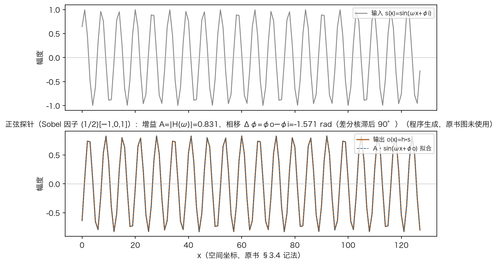
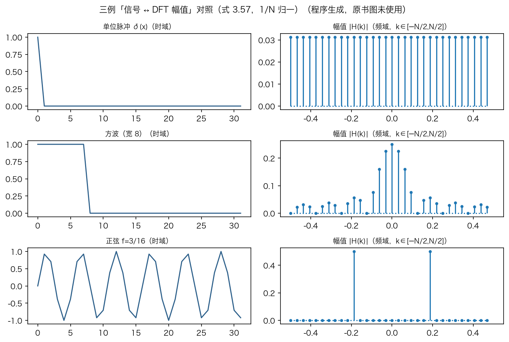
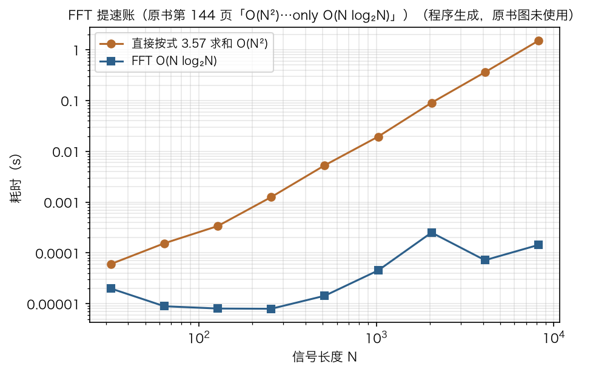
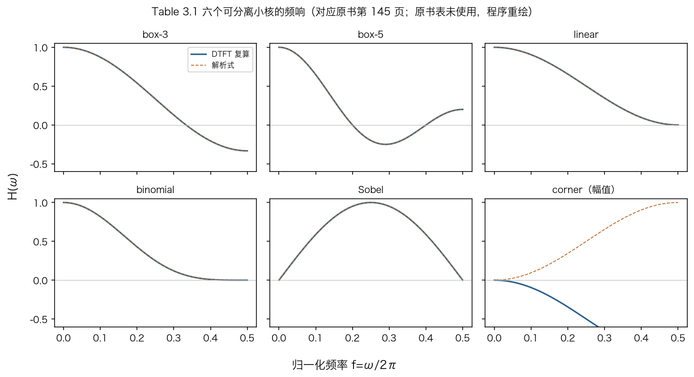
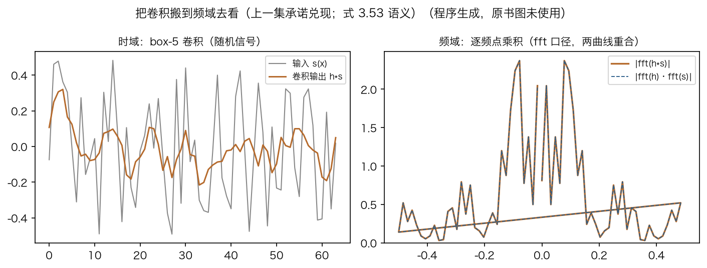

导引 · 本集四步
这一集讲一维傅里叶
上一集说把卷积搬到频域，今天兑现。
书上第 142 页起，讲第 3.4 节的前半。
四步：正弦探针、定义、FFT、六个小核。
大核卷积用 FFT，耗时与核大小无关。
依据：原书第 142–145 页
本集四步
正弦探针：量增益与相移
傅里叶变换：逐频率登记
FFT：把 N² 降到 N·log₂N
六核频响：六条曲线
正课第十九集
01 / 10
频域 · 第一问
怎么知道滤波器对频率做了什么
书上先问：滤波器对高、中、低频各做了什么。
办法：喂一个已知频率的正弦波。
看它出来被衰减了多少。
输入写成式 3.50：ω 等于 2πf，还有初相位。
依据：原书第 142 页
s(x) = sin(2πfx + φᵢ) = sin(ωx + φᵢ)
式 3.50；ω = 2πf 是角频率，f 是频率，φᵢ 是初相位
正课第十九集
02 / 10
频域 · 同频输出
正弦过线性滤波器，频率不变
式 3.51：输出还是同频正弦。
幅度变成 A，相位挪到 φo。
卷积是平移加权和，同频正弦相加不变频。
会生谐波的是非线性系统；电子管暖声就是谐波失真。
依据：原书第 142–143 页；本集实验

正弦探针过差分核（Sobel 因子）：同频输出，增益 A=0.831、相移 −1.571 rad，差分核滞后 90°｜程序生成，未用教材或论文原图
正课第十九集
03 / 10
复数 · 打包
复正弦把增益和相位装在一起
式 3.52：把 cos 与 j sin 装进同一个指数。
这个恒等式就是欧拉公式。
复正弦过滤波器，输出只乘一个复数。
式 3.53 一起带走幅度与相位，这个复数叫复数增益。
依据：原书第 143 页
e^(jωx) = cos ωx + j·sin ωx
式 3.52；复正弦过线性系统：o(x) = h∗s = A·e^(j(ωx+φ))（式 3.53）
正课第十九集
04 / 10
定义 · 登记表
傅里叶变换：逐频率记下增益和相位
式 3.54：H(ω) = A·e^(jφ)。
每个频率登记一组增益与相位。
H(ω) 是复正弦通过滤波器的响应。
式 3.55 写成变换对 h(x) ↔ H(ω)。
依据：原书第 143 页
H(ω) = F{h(x)} = A·e^(jφ)
式 3.54；变换对记法 h(x) ↔ H(ω)（式 3.55）
正课第十九集
05 / 10
公式 · 连续与离散
两条封闭公式：积分与求和
连续域式 3.56 是积分，离散域式 3.57 是除以 N 的求和。
k 取零时就是普通均值；两条公式对核与信号都适用。
离散版叫 DFT，k 超出 ±N/2 会与低频混叠。
三例：脉冲谱平、方波主瓣加旁瓣、正弦两根线。
依据：原书第 143–144 页；本集实验

三例信号与 DFT 幅值谱：脉冲谱平、方波主瓣加旁瓣、正弦两根线｜程序生成，未用教材或论文原图
正课第十九集
06 / 10
算法 · FFT
FFT：从 N² 降到 N·log₂N
直接算 DFT 要 N² 次乘加，FFT 只要 N·log₂N。
FFT 分成 log₂N 级，每级 2×2 小变换，再加几轮重排。
N=8192：直接约 1.5 秒，FFT 不到 0.1 毫秒，快上万倍。
复杂度约 630 倍；分级图像蝴蝶，叫蝶形运算。
依据：原书第 144 页；本集实验

FFT 提速：直接求和与 FFT 的耗时随 N 变化（log-log）｜程序生成，未用教材或论文原图
正课第十九集
07 / 10
六核 · 频响
六个小核的六条频响曲线
六核：box-3、box-5、linear、binomial、Sobel、corner。
滑动平均高频衰减不均，可能引起振铃。
box-3 在横轴 1/3 处过零翻负，负增益就是反相。
binomial 权重 1、4、6、4、1，圆润无负瓣。
依据：原书第 144–145 页；本集实验

六个可分离小核的频响：box-3 过零翻负、binomial 圆润无负瓣、Sobel 中频隆起｜程序生成，未用教材或论文原图
正课第十九集
08 / 10
卷积 · 频域乘法
卷积搬到频域就是逐点相乘
卷积的谱等于两个谱的逐频点乘积。
频域里没有滑动窗口，只有乘法，各频率独立。
严格说这是循环卷积；做普通卷积要先补零。
两次正变换加一次反变换，都是 N·log₂N，和核大小无关。
依据：原书第 143–144 页；本集实验

时域 box-5 卷积与频域逐点乘积：两条曲线重合｜程序生成，未用教材或论文原图
正课第十九集
09 / 10
小结 · 下一站
一维频域四步走完
正弦探针：同频出来，只报增益和相移。
傅里叶变换：逐频率登记增益与相位。
FFT：把 N² 压到 N·log₂N。
六核频响：负瓣会反相，圆润核留高频。
依据：原书第 142–145 页
下一站
二维傅里叶变换
维纳滤波的功率谱
离散余弦变换
原书第 146 页起
正课第十九集
10 / 10